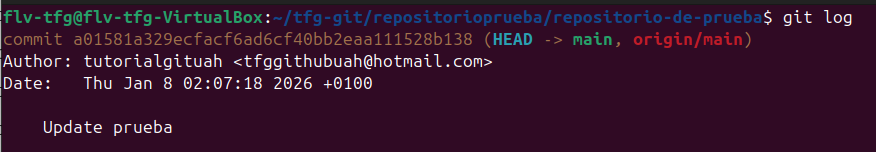
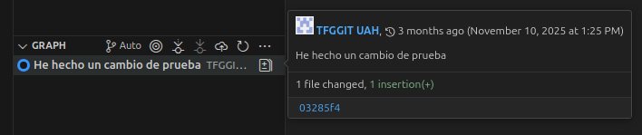

git logSe utiliza para visualizar el historial de commits de tu repositorio. Muestra información sobre los cambios realizados, quién los hizo y cuándo.

Dentro de la carpeta ejecutamos lo siguiente:
git log
Esto nos mostrará el historial completo de commits con detalles de autor, fecha y mensaje.Para una versión más compacta, usa:
git log --oneline
Para ver solo los últimos commits:git log -n 5
Para ver los cambios en detalle:git log -p

En la ventana de control de git dentro de vscode, puedes ver el historial de commits en la sección de "Commits". Pon el cursor encima de cualquier commit para ver sus detalles y si haces click te permitirá ver los cambios que sufrió el archivo.